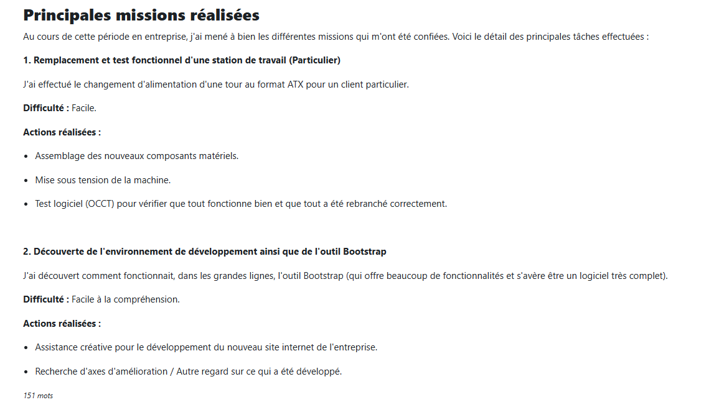
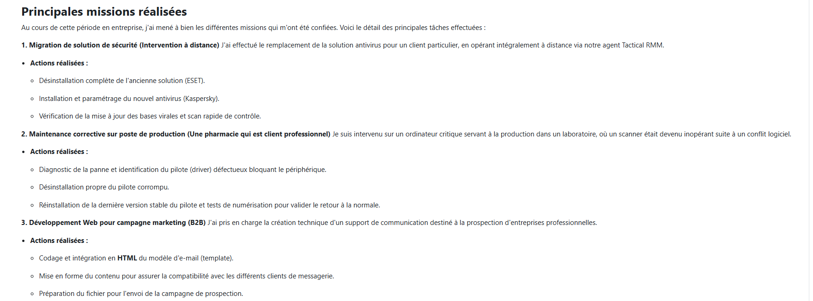
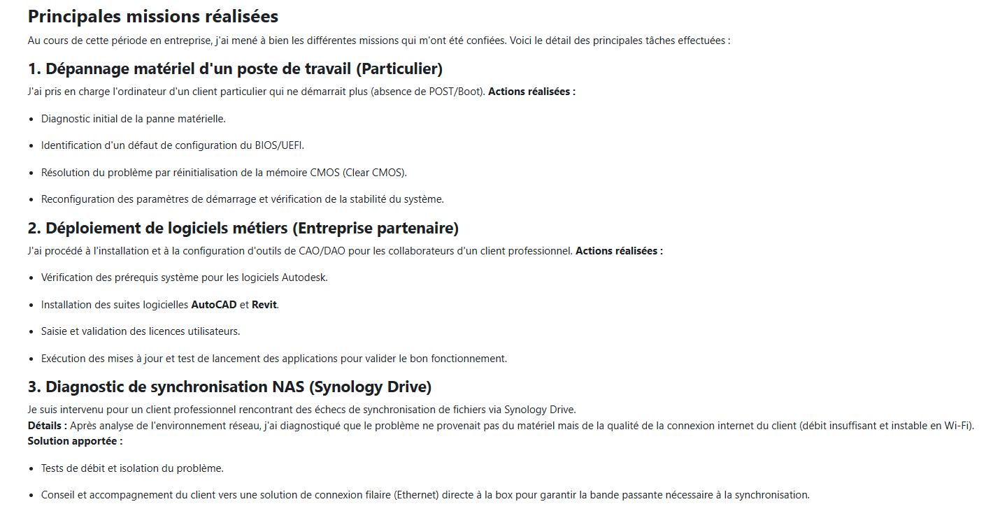
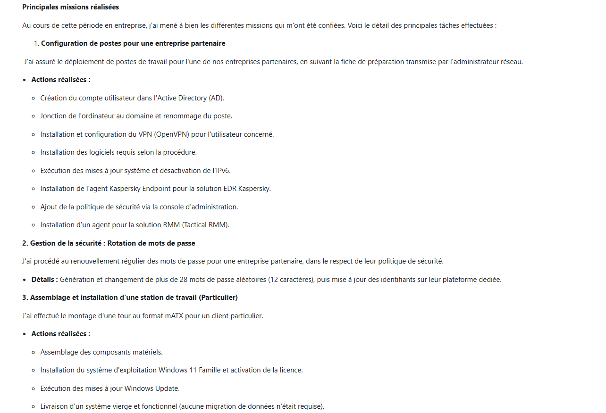
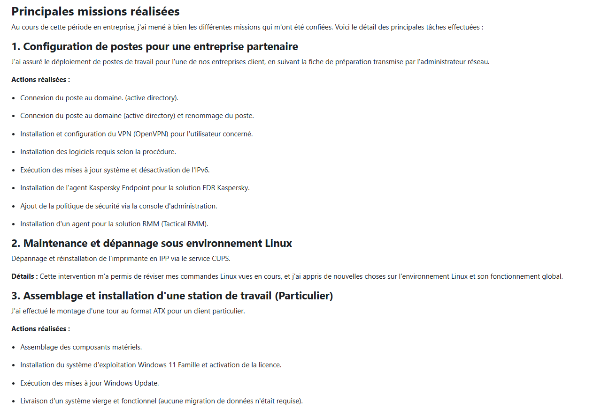
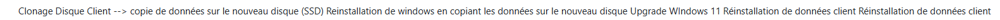

Note : Ce document retrace les missions effectuées durant mon alternance chez Microtiq dans le cadre de mon BTS SIO. Il illustre mes compétences en diagnostic, en déploiement de solutions logicielles et matérielles, ainsi qu'en gestion de la sécurité.





